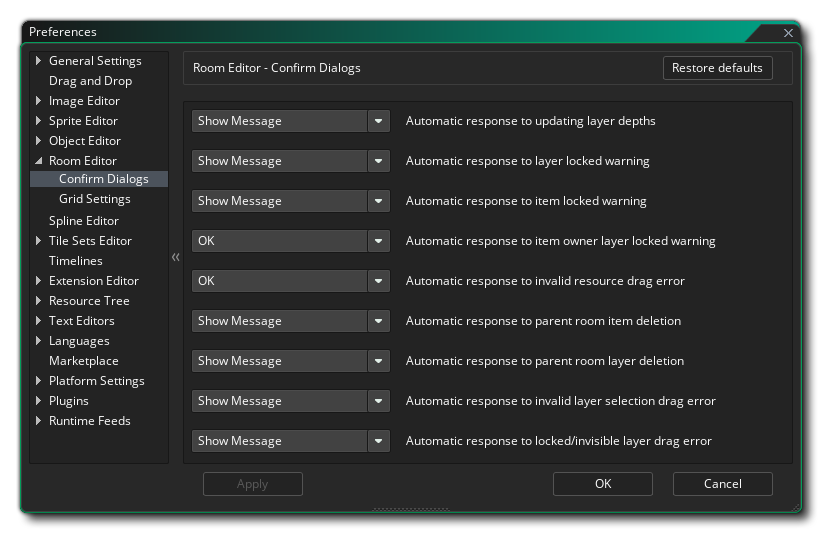
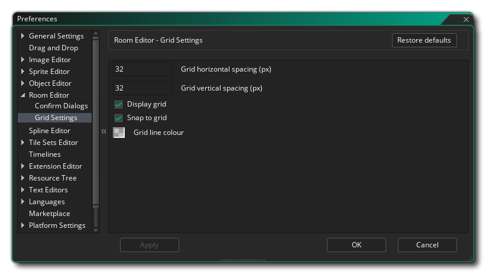

Mit den Raum-Editor-Einstellungen legen Sie fest, wie der Raum-Editor aussehen und sich verhalten soll. Die allgemeinen Einstellungen sind wie folgt:
- Kettenausblendstartabstand (px): Legt den Abstand vom übergeordneten Fenster fest, aus dem der Kettenlink ausgeblendet werden soll. Standard ist 10px.
- Chain fade out stop distance (px): Legt den Abstand vom übergeordneten Fenster fest, bis zu dem die Kettenverknüpfung endet. Standard ist 100px.
- Chain Minimum Alpha: Legt den endgültigen Alpha-Wert nach dem Ausbleichpunkt für die Alpha-Kette fest. Standard ist 0.3.
- Standardabstand der Ebenentiefe: Wenn Sie im Raumeditor mehrere Ebenen erstellen, wird ihnen automatisch eine Tiefe zugewiesen, die auf ihrer Position in der Ebenenliste basiert. Diese Tiefe wird um den hier angegebenen Betrag erhöht. Der Standardwert ist 100, dh jede Ebene hat die vorherige Ebene + 100 in der Tiefe.
- Standardraumbreite: Legt die anfängliche Breite fest, die als Standard für einen neuen Raum ausgewählt wird. Standard ist 1024px.
- Standardraumhöhe: Legt die Anfangshöhe fest, die als Standard für einen neuen Raum ausgewählt wird. Standard ist 768px.
- Hinzufügen von Standard-Raumebenen - Wenn Sie eine neue GameMaker Studio 2 erstellen, generiert GameMaker Studio 2 eine Reihe von "Basis" -Schichten für Sie - eine Hintergrundebene und eine Instanzebene. Sie können dieses Verhalten hier deaktivieren, sodass neue Räume keine vorgefertigten Layer haben. Dies ist standardmäßig aktiviert.
- Alle Zimmer haben Blick: Wenn Sie Ansichten aktiv in einem Raum haben, wird dies durch eine Linie dargestellt, wo die Sicht Grenzen im Raum sein würde, und die Sichtbarkeit dieses Bereichs kann sich im Editor mit der dedizierten Taste umgeschaltet werden. Sie können jedoch festlegen, dass beim Öffnen eines Raums die Ansichtsgrenzen nicht sichtbar sind, indem Sie diese Option deaktivieren (die Schaltfläche kann weiterhin verwendet werden, um sie erneut anzuzeigen). Der Standardwert ist aktiviert, sodass beim Öffnen eines Raums Ansichtsgrenzen sichtbar werden.
Der Rest der allgemeinen Optionen bezieht sich auf die verschiedenen Farben, die in der Raumeditor-Benutzeroberfläche verwendet werden. Wenn Sie auf eines der Farbfelder doppelklicken, können Sie die Farbe für diese Einstellung bearbeiten.
Weitere Optionen stehen zur Bearbeitung aus den folgenden Unterkategorien zur Verfügung:
Mit den Voreinstellungen " Config-Dialoge" können Sie die Nachrichten ändern, die im Raumeditor angezeigt werden, wenn Sie bestimmte Aktionen ausführen. Die Nachrichten, die Sie ändern können, sind:
- Automatische Reaktion auf die Aktualisierung der Schichttiefen - Wenn Sie die Schichttiefe ändern, wird eine Meldung angezeigt, die Sie warnt, dass dadurch auch alle anderen Schichttiefen automatisch aktualisiert werden. Mit dieser Option können Sie auswählen, ob die Nachricht angezeigt werden soll, die Layer so aktualisieren, als ob Sie auf "OK" geklickt hätten, oder nichts aktualisieren, als ob Sie auf "Nein" geklickt hätten.
- Automatische Antwort auf Layer-Locked-Warnung - Wenn Sie versuchen, eine Ebene im Raum zu löschen, die zufällig gesperrt ist, wird Ihnen standardmäßig eine Nachricht angezeigt. Wenn Sie diese Option jedoch auf "Ok" setzen, wird die Nachricht nicht angezeigt und Sie können die Ebene nicht löschen.
- Automatische Antwort auf Warensicherung - Wenn Sie versuchen, ein Objekt zu löschen, das zufällig gesperrt ist, wird Ihnen standardmäßig eine Nachricht angezeigt. Wenn Sie diese Option jedoch auf "Ok" setzen, wird die Nachricht nicht angezeigt und Sie können das Element nicht löschen.
- Automatische Antwort auf Warnung der Objektbesitzer-Layer-Sperre - Wenn Sie versuchen, ein Objekt auf einer Ebene zu löschen, und die Ebene zufällig gesperrt ist (auch wenn das Objekt nicht vorhanden ist), wird Ihnen standardmäßig eine Nachricht angezeigt, die Sie darüber informiert nicht getan werden. Wenn Sie diese Option jedoch auf "Ok" setzen, wird die Nachricht nicht angezeigt und Sie können das Element nicht löschen.
- Automatische Antwort auf ungültigen Ressourcen-Ziehfehler - Wenn Sie versuchen, eine Ressource zu einem Layer hinzuzufügen, der nicht für diesen Ressourcentyp vorgesehen ist (z. B. Hinzufügen eines Sprites zu einem Pfad-Layer), wird Ihnen standardmäßig eine Nachricht angezeigt Sie, dass es nicht getan werden kann. Wenn Sie diese Option jedoch auf "Ok" setzen, wird die Nachricht nicht angezeigt und Sie können die Ressource einfach nicht hinzufügen.
- Automatische Antwort auf das Löschen von Objekten im übergeordneten Raum - Hier können Sie auswählen, was passiert, wenn Sie einen Eintrag löschen, der Teil eines übergeordneten Raums ist (und in allen untergeordneten Räumen vorhanden ist). Standardmäßig wird Ihnen eine Warnmeldung angezeigt und Sie können entscheiden, was zu tun ist. Sie können jedoch "Alle löschen" auswählen, um die Nachricht zu unterdrücken und mit dem Löschen des Elements aus dem übergeordneten Raum und allen untergeordneten Elementen fortzufahren Wählen Sie "Alle behalten", um zu unterdrücken, dass die Nachricht das Löschen abbricht.
- Automatische Antwort auf Löschung der übergeordneten Raumebene - Hier können Sie auswählen, was passiert, wenn Sie eine Ebene löschen, die Teil eines übergeordneten Raums ist (und in allen untergeordneten Räumen vorhanden ist). Standardmäßig wird Ihnen eine Warnmeldung angezeigt und Sie können entscheiden, was zu tun ist. Sie können jedoch "Alle löschen" festlegen, um die Nachricht zu unterdrücken und mit dem Layer-Löschen aus dem übergeordneten Raum und allen untergeordneten Elementen fortzufahren Wählen Sie "Alle behalten", um zu unterdrücken, dass die Nachricht das Löschen abbricht.
- Automatische Antwort auf ungültigen Ebenenauswahl-Dragfehler - Hier können Sie auswählen, was passiert, wenn Sie eine Ressource auf den Raumeditor ziehen, wenn Sie im Ebeneneditor mehrere Ebenen ausgewählt haben (oder gar keine Ebene ausgewählt haben). Standardmäßig wird eine Warnmeldung angezeigt. Sie können diese Option jedoch auf "OK" setzen, um die Nachricht zu unterdrücken und fortzufahren, ohne Ressourcen hinzuzufügen.
- Automatische Antwort auf Schleppfehler bei gesperrten oder unsichtbaren Ebenen - Hier können Sie auswählen, was passiert, wenn Sie eine Ressource auf eine Ebene ziehen, die gesperrt wurde oder als unsichtbar markiert ist. Standardmäßig wird eine Warnmeldung angezeigt. Sie können diese Option jedoch auf "OK" setzen, um die Nachricht zu unterdrücken und fortzufahren, ohne Ressourcen hinzuzufügen.
In den Voreinstellungen für Rastereinstellungen wird die Funktionsweise des Raster-Overlays mit den folgenden Optionen geändert:
- Horizontaler Rasterabstand (px) - Hier wird der horizontale Abstand für Gitterzellen des Raumrasters in Pixeln festgelegt. Der Standardwert ist 32px.
- Gitter-Vertikalabstand (px) - Hier wird der vertikale Abstand für Gitterzellen des Raumrasters in Pixeln festgelegt. Der Standardwert ist 32px.
- Gitter anzeigen - Mit dieser Option schalten Sie das Raumgitter ein oder aus, wenn Sie zum ersten Mal einen Raum öffnen. Es ist standardmäßig eingeschaltet, aber selbst wenn es ausgeschaltet ist, können Sie es mit der entsprechenden Taste im Raum-Editor selbst wieder aktivieren.
- Am Raster ausrichten - Mit dieser Option können Sie festlegen, ob in einem Raum standardmäßig Assets an das Raumraster angepasst werden sollen oder nicht, wenn ein Raum zum ersten Mal geöffnet wird. Es ist standardmäßig eingeschaltet, aber selbst wenn es ausgeschaltet ist, können Sie es mit der entsprechenden Taste im Raum-Editor selbst wieder aktivieren.
- Rasterlinienfarbe - Mit dieser Option können Sie die Farbe (einschließlich der Alpha-Komponente) der Raumgitterlinien festlegen. Der Standardwert ist (rgba) #FFFFFF30.